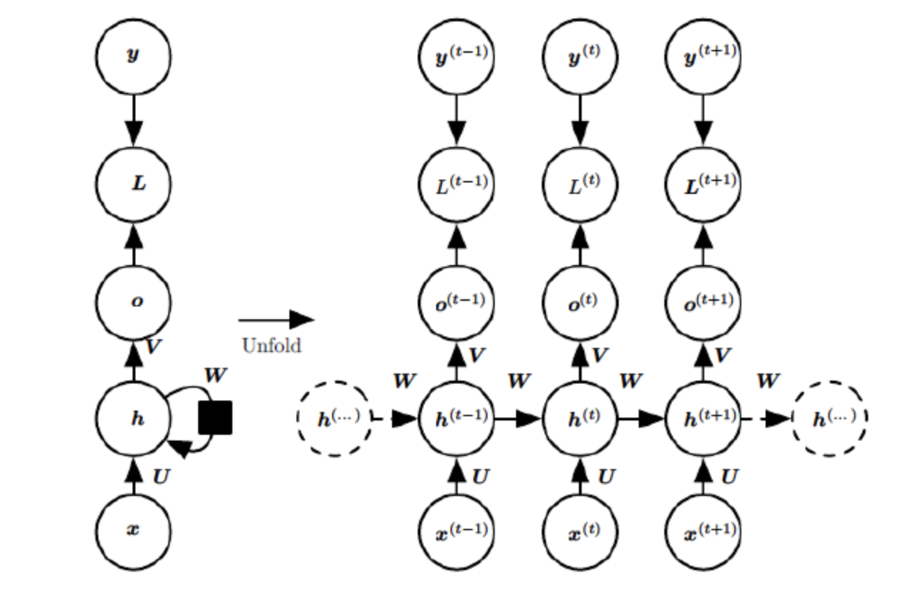

1.5、BP和BPTT
1、反向传播算法（Backpropagation）
- 反向传播算法要解决的问题
深层神经网络（Deep Neural Network，DNN)由输入层、多个隐藏层和输出层组成，任务分为分类和回归两大类别。如果我们使用深层神经网络做了一个预测任务，预测输出为$\tilde{y}$，真实的为y，这时候就需要定义一个损失函数来评价预测任务的性能，接着进行损失函数的迭代优化使其达到最小值，并得到此时的权重矩阵和偏置值。在神经网络中一般利用梯度下降法（Gradient Descent）迭代求解损失函数的最小值。在深层神经网络中使用梯度下降法迭代优化损失函数使其达到最小值的算法就称为反向传播算法（Back Propagation，BP）。
- 反向传播算法的推导过程
假设深层网络第L层的输出为$$ a_{L} $$:
$$ \begin{split}
a^{L} &= \sigma(z^{L}) \
&= \sigma (W^{L} \cdot a^{L-1} + b^{L})
\end{split} $$
定义损失函数$$J(w,b,x,y)$$为：
$$\begin{split}
J(w,b,x,y) &= \frac{1} {2} \parallel a_{L} - y \parallel _{2} ^{2} \
&= \frac{1} {2} \parallel \sigma(z^{L}) - y \parallel _{2} ^{2}\
&= \frac{1} {2} \parallel \sigma( W^{L} \cdot a^{L-1} + b^{L} ) - y \parallel {2} ^{2}\
\end{split}$$
注解：$a{L}$为预测输出,$y$为实际值，二者具有相同的维度。$\parallel \cdot \parallel_{2}$ 代表二范数。
对损失函数运用梯度下降法迭代求最小值，分别求解对于权重矩阵$W^{L}$和偏置$b^{L}$的梯度。
损失函数对权重矩阵的梯度：
$$\begin{split}
\frac{\partial J(w,b,x,y)}{\partial W^{L}} &=
\frac{\partial J(w,b,x,y)}{\partial a^{L}} \cdot
\frac{\partial a^{L}}{\partial z^{L}} \cdot
\frac{\partial z^{L}}{\partial w^{L}} \
&= (a^{L} - y) \bigodot \sigma^{‘}(z^{L}) \ast(a^{(L-1)})^{T}
\end{split}$$
损失函数对偏置的梯度：
$$\begin{split}
\frac{\partial J(w,b,x,y)}{\partial b^{L}} &=
\frac{\partial J(w,b,x,y)}{\partial a^{L}} \cdot
\frac{\partial a^{L}}{\partial z^{L}} \cdot
\frac{\partial z^{L}}{\partial b^{L}} \
&= (a^{L} - y) \bigodot \sigma^{‘}(z^{L})
\end{split}$$
其中公式中的符号$ \bigodot$ 代表Hadamard积，即维度相同的两个矩阵中位置相同的对应数相乘后的矩阵。
损失函数对于权重矩阵和偏置的梯度含有共同项$$\frac{\partial J(w,b,x,y)}{\partial a^{L}} \cdot \frac{\partial a^{L}}{\partial z^{L}} $$，令其等于$$\delta^{L}$$。
可以求得$$ \delta^{L}$$为
$$\begin{split}
\delta^{L} &= \frac{\partial J(w,b,x,y)}{\partial a^{L}} \cdot \frac{\partial a^{L}}{\partial z^{L}} \
&= (a^{L} - y) \bigodot \sigma^{‘}(z^{L})
\end{split}$$
知道L层的$$ \delta^{L}$$就可以利用数学归纳法递归的求出L-1，L-2……各层的梯度。
$$\begin{split}
\delta^{l} &= \frac{\partial J(w,b,x,y)}{\partial a^{l}} \cdot \frac{\partial a^{l}}{\partial z^{l}} \
&= \frac{\partial J(w,b,x,y)}{\partial a^{L}} \cdot
\frac{\partial a^{L}}{\partial z^{L}} \cdot
\frac{\partial z^{L}}{\partial z^{L-l}} \cdot
\frac{\partial z^{L-1}}{\partial z^{L-2}} ……
\cdot \frac{\partial z^{l+1}}{\partial z^{l}}
\end{split}$$
又知：
$$ z^{l} = W^{l} \cdot a^{l-1} + b^{l} $$
所以第$$l$$层的梯度$$W^{l}、b^{l}$$可以表示为 ：
$$\begin{split}
\frac{\partial J(w,b,x,y)}{\partial W^{l}} &= \delta^{l} (a^{(l-1)})^{T}\
\frac{\partial J(w,b,x,y)}{\partial b^{l}} &= \delta^{l}
\end{split}$$
数学归纳法求：
$$\begin{split}
\delta^{l} &= \frac{\partial J(w,b,x,y)}{\partial a^{l}} \cdot
\frac{\partial a^{l}}{\partial z^{l}} \
& = \frac{\partial J(w,b,x,y)}{\partial a^{l+1}} \cdot
\frac{\partial a^{l+1}}{\partial z^{l+1}} \cdot
\frac{\partial z^{l+1}}{\partial z^{l}} \
& = \delta^{l+1} \frac{\partial z^{l+1}}{\partial z^{l}}
\end{split}$$
又知：
$$\begin{split}
z^{l+1} &= W^{l+1} \cdot a^{l} + b^{l+1} \
&= W^{l+1} \cdot \sigma( z^{l})+ b^{l+1}
\end{split}$$
所以可得：
$$\begin{split}
\frac{\partial z^{l+1}}{\partial z^{l}} &= ( W^{l+1})^{T} \bigodot \sigma ^{‘}( z^{l})
\end{split}$$
可得：
$$\begin{split}
\delta^{l} & = \delta^{l+1} \frac{\partial z^{l+1}}{\partial z^{l}} \
&= \delta^{l+1} ( W^{l+1})^{T}\bigodot \sigma ^{‘}( z^{l})
\end{split}$$
求得了$ \delta^{l}$ 的递推关系之后，就可以依次求得各层的梯度$W^{l}和b^{l}$了。
2、 随时间的反向传播过程（Back Propagation Through Time）
循环神经网络的特点是利用上下文做出对当前时刻的预测，RNN的循环也正是随时间进行的，采用梯度下降法对循环神经网络的损失函数进行迭代优化求其最小值时也是随时间进行的，所以这个也被称为随时间的反向传播（Back Propagation Through Time，BPTT），区别于深层神经网络中的反向传播（BP）。

- 为了更易被读者理解推导过程，如上图所示，我们进行以下定义：
- U：输入层的权重矩阵
- W：隐藏层的权重矩阵
- V：输出层的权重矩阵
- t时刻的输入为$$x^{(t)}$$：同理$$x^{(t+1)}$$为t+1时刻的输入信息。
- t时刻的隐藏层状态为$$h^{(t)}$$：由$$x^{(t)}$$和$$h^{(t-1)}$$共同决定。
$$\begin{split}
h^{t} &=\sigma(z^{(t)}) \
&= \sigma (U \cdot x^{(t)} + W \cdot h^{(t-1)} + b)\
&=tanh (U \cdot x^{(t)} + W \cdot h^{(t-1)} + b)
\end{split}$$ - t时刻的输出为$$o^{(t)}$$：只由t时刻的隐藏状态$h^{(t)}$决定。
$$ o^{t} = V \cdot h^{(t)} +c $$ - 真实的值为$y^{t}$，预测的值为$\hat{y}$。
$$\begin{split}
\hat{y} &= \sigma(o^{(t)}) \
&= softmax(o^{(t)})
\end{split}$$ t 时刻的损失函数为$L^{t}$，评价预测的性能也就是量化预测值与真实值之间的差，本篇假设损失函数为交叉熵
$$L^{(t)} = y^{(t)} log( \hat{y^{(t)}} ) + ( 1 - y^{(t)}) log(1- \hat{y^{(t)}} ) $$
最终的损失函数为各个时刻损失函数的加和,即
$$ L = \sum_{t=1}^{\tau} L^{(t)}$$注解：
(1) U，V，W为线性共享参数，在循环神经网络的不同时刻不同位置，这三个权重矩阵的值是一样的，这也正是RNN的循环所在。
(2) 假设损失函数为交叉熵，也就是等价于对数损失函数，隐藏层激活函数为tanh函数，输出层激活函数为softmax函数。
- BPTT的推导
因为我们假设的输出层激活函数为softmax函数，所以得到以下公式：
$$\begin{split}
\frac{\partial{L^{(t)}} }{\partial{o^{(t)}}} = \sum_{t=1}^{t=\tau} (\hat{ y^{(t)}}-y^{(t)})
\end{split}$$
假设隐藏层的函数为tanh函数，可得
$$\begin{split}
\frac{\partial{h^{(t)}} }{\partial{h^{(t-1)}}} &= W^{T} diag(1-h^{(t)} \bigodot h^{(t)})\
\frac{\partial{h^{(t)}} }{\partial{U}} &= (x^{(t)})^{T} diag(1-h^{(t)} \bigodot h^{(t)})\
\frac{\partial{h^{(t)}} }{\partial{W}} &= (h^{(t-1)})^{T} diag(1-h^{(t)} \bigodot h^{(t)})\
\frac{\partial{h^{(t)}} }{\partial{b}} &= diag(1-h^{(t)} \bigodot h^{(t)})\
\end{split}$$
损失函数对于c的梯度：
$$\begin{split}
\frac{\partial{L(U,V, W,b, c)}}{\partial{c}} &= \sum_{t=1}^{t=\tau}\frac{\partial{L^{(t)}} }{\partial{o^{(t)}}} \frac{\partial{o^{(t)}} }{\partial{c}} \
&= \sum_{t=1}^{t=\tau} y^{(t)}-y^{(t)}
\end{split}$$
损失函数对于V的梯度：
$$\begin{split}
\frac{\partial{L(U,V, W,b, c)}}{\partial{V}} &= \sum_{t=1}^{t=\tau}\frac{\partial{L^{(t)}} }{\partial{o^{(t)}}} \frac{\partial{o^{(t)}} }{\partial{V}} \
&= \sum_{t=1}^{t=\tau} (\hat{y^{(t)}}-y^{(t)}) (h^{(t)})^{T}
\end{split}$$
损失函数对于W, U, b的梯度：
随时间的反向传播算法中，循环神经网络的梯度损失由当前时间步t的梯度和下一时刻t+1的梯度损失两部分决定。
定义损失函数对于隐藏状态$$h^{(t)}$$的梯度为：
$$\delta ^{(t)} = \frac{\partial{L(U,V, W,b, c)}}{\partial{h^{(t)}}}$$
类似于前文所说的深层神经网络中的反向传播算法，可以由$$\delta ^{(t+1)}$$递推出$$\delta ^{(t)}$$，公式如下：
$$\begin{split}
\delta ^{(t)} &=
\frac{\partial{L^{(t)}} }{\partial{o^{(t)}}} \frac{\partial{o^{(t)}} }{\partial{h^{(t)}}} +
\frac{\partial{L^{(t)}} }{\partial{h^{(t+1)}}} \frac{\partial{h^{(t+1)}} }{\partial{h^{(t)}}} \
&= V^{T}(\hat{y^{(t)}}-y^{(t)}) +W^{T}\delta ^{(t+1)} diag(1 - h^{(t+
1)} \bigodot h^{(t+1)})
\end{split}$$
注意：
对于$$\delta ^{(\tau)}$$因为没有下一时刻的信息了，所以
$$\begin{split}
\delta ^{(\tau)} &=
\frac{\partial{L^{(\tau}} }{\partial{o^{(\tau)}}} \frac{\partial{o^{(\tau)}} }{\partial{h^{(\tau)}}}\
&= V^{T}(\hat{y^{(\tau)}}-y^{(\tau)})
\end{split}$$
在递推出了以上公式后，计算损失函数对于W，U，b的梯度就比较简单了。
$$\begin{split}
\frac{\partial{L(U,V, W,b, c)}}{\partial{U}} &= \sum_{t=1}^{t=\tau}\frac{\partial{L^{(t)}} }{\partial{h^{(t)}}} \frac{\partial{h^{(t)}} }{\partial{U}} \
&= \sum_{t=1}^{t=\tau} \delta^{(t)} (x^{(t)})^{T} diag(1-h^{(t)} \bigodot h^{(t)})\
\end{split}$$
$$\begin{split}
\frac{\partial{L(U,V, W,b, c)}}{\partial{W}} &= \sum_{t=1}^{t=\tau}\frac{\partial{L^{(t)}} }{\partial{h^{(t)}}} \frac{\partial{h^{(t)}} }{\partial{W}} \
&= \sum_{t=1}^{t=\tau} \delta^{(t)} (h^{(t-1)})^{T} diag(1-h^{(t)} \bigodot h^{(t)})\
\end{split}$$
$$\begin{split}
\frac{\partial{L(U,V, W,b, c)}}{\partial{b}} &= \sum_{t=1}^{t=\tau}\frac{\partial{L^{(t)}} }{\partial{h^{(t)}}} \frac{\partial{h^{(t)}} }{\partial{b}} \
&= \sum_{t=1}^{t=\tau} \delta^{(t)} diag(1-h^{(t)} \bigodot h^{(t)})\
\end{split}$$